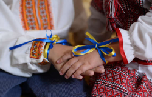
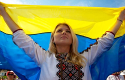
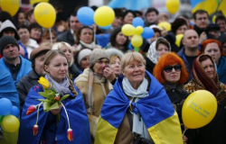
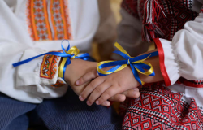
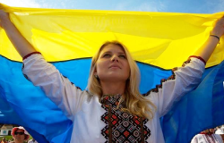
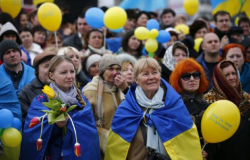

Минуле
формування ментальності українців

Люди землі
Ми - хлібороби. На СВОЇЙ землі господарюємо, сворюємо, дбаємо про оселю
Повністю

Громади
Ми з покон-віків - громади, які включають об’єднання індивідуальностей
Повністю

Історія
Фольклор розповідає правду, бо ми учасники, творці історії та представляємо її, так як є
Повністю

Творчість
У нас колядки, щедрівки, де возвеличують господаря, господиню, урожай
Повністю


 




